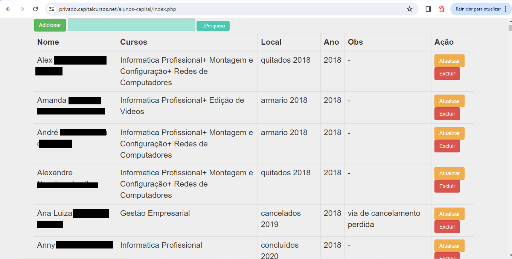

Informativo
Por se tratar de um sistema privado não será disponibilizado o acesso.
Foi utilizado um crud de terceiros pela praticidade que encontrei na epoca na qual realizei as adaptações necessarias com recursos e uma barra de pesquisa (mesma utilizada no sistema +Saude).
Imagem exemplo
